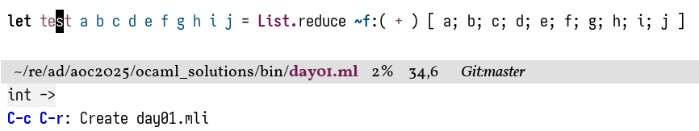
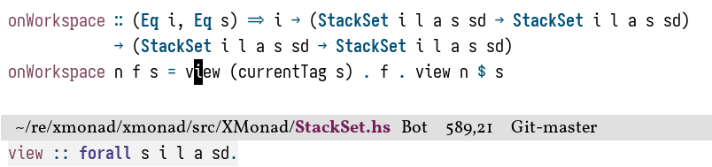
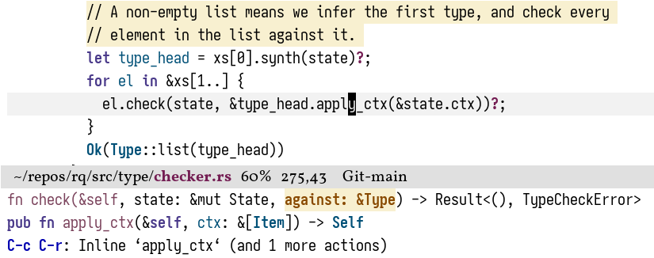
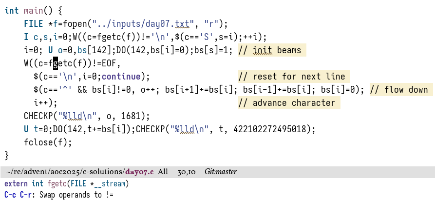
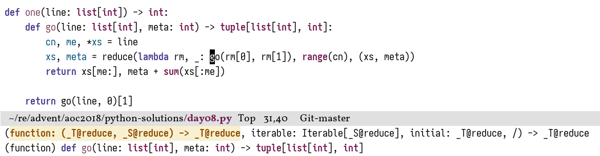
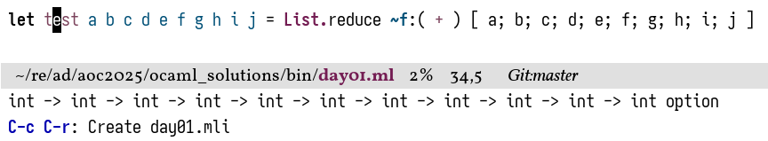
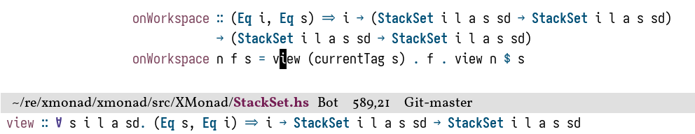

In an
earlier post
I talked about making the hover signatures for
lsp-mode
a little bit more useful.
Out of the completely irrational desire to use more built-in packages,
I’ve recently switched to
eglot
as my lsp client of choice,
which however has the same inclination for showing hover information I don’t care about by default.
I won’t assume that you have read the lsp-mode post,
so let’s quickly remind ourselves of the general problem:
Lsp clients have the option of showing useful things on hover.
In most languages, there is an obvious candidate for this: the type signature of the thing at point.
Sadly—for some languages—the implementation of the feature is… not great.
but this is as good of an excuse as any to become a bit more familiar with the eglot codebase.
Plus, customising Emacs is just so much fun.
Different language servers behave a bit differently here,
but the default for all of them is pretty “meh”.
To be clear, I don’t think these are shortcomings of the individual language servers,
it’s just that there’s a mismatch with the integration into Emacs’s lsp client landscape.
Breaking long things into several lines is quite normal, after all.
rust-analyzer shows where the thing comes from
I will draw your attention to the second line in the minibuffer;
the first is just additional context,
I do like eglot’s default behaviour of showing that we’re inside of a function call and
which argument is currently being filled in!
and the third are available code actions.
What eglot shows me is that apply_ctx is a method of the Type type,
sitting in ./type/context.rs,
with ./ being the root of the crate.
clangd shows the vague type
(based)pyright shows something completely useless
ocaml-lsp sort of shows what I want to see
…but only for short type signatures

Same issue with haskell-language-server

What I’d like to achieve instead is a type signature—if I want to know where the thing comes from I can just M-. it.





In case anyone finds this useful,
I’ve packaged the source code of this article as eglot-hover.
It may need some adjustments depending on the language server implementation,
but at least for the ones shown above it should work as-is.
Onto the fun part.
The good—or bad, depending on your inclination—thing about lsp-mode is that it’s almost unnecessarily configurable just by user options.
This includes hover signatures:
lsp-clients-extract-signature-on-hover is just a cl-defmethod,
which one can trivially override depending on the name of the currently active language server (one of its arguments).
Eglot doesn’t actually do any displaying itself,
but instead delegates to the built-in ElDoc.
Scrolling through eglot’s code, we can find integration functions like this:
(defuneglot-hover-eldoc-function(cb&rest_ignored)"A member of `eldoc-documentation-functions', for hover."(when(eglot-server-capable:hoverProvider)(let((buf(current-buffer)))(eglot--async-request(eglot--current-server-or-lose):textDocument/hover(eglot--TextDocumentPositionParams):success-fn(eglot--lambda((Hover)contentsrange)(eglot--when-buffer-windowbuf(let*((info(unless(seq-empty-pcontents)(eglot--hover-infocontentsrange)))(pos(andinfo(string-match"\n"info))))(while(andpos(get-text-propertypos'invisibleinfo))(setqpos(string-match"\n"info(1+pos))))(funcallcbinfo:echopos)))):hint:textDocument/hover))t))
How exactly to handle the callback cb is documented in eldoc-documentation-functions,
but that’s actually not super important for this application.
We don’t want to add anything to eglot’s already generated hover signature,
but completely replace it in certain contexts,
which essentially boils down to redefining pos.
A priori, this is a buffer position up until which the docstring will be shown;
as you can see above, the default implementation is to just show the first “real” line.
While pos is named as if it should always be a number,
it gets passed into the callback as a value for the :echo key.
Quoting the eldoc-documentation-functions documentation:
:echo, controlling how eldoc-display-in-echo-area should
present this documentation item in the echo area, to save
space. If VALUE is a string, echo it instead of DOCSTRING. If
a number, only echo DOCSTRING up to that character position.
If skip, don’t echo DOCSTRING at all.
The value can be a string, in which case that string is displayed verbatim.
Hence, the only thing we need to do is to monkey patcheglot-hover-eldoc-function,
match on the name of the current major mode,
and extract the “correct” signature ourselves if needed.
Suppose we are given the magic functions
eglot-hover--get to extract the signature out of the response that the lsp server sends,
as well as eglot-hover--hl-string to highlight the resulting string.
Then, matching just on rustic-mode,
the final change is rather small:
Since we’re not returning a buffer position, we have a lot more freedom to highlight the string as we want.
For example, in haskell-mode I prettify some symbols (forall becomes ∀, \ becomes λ, and so on),
and these would otherwise get lost when just the buffer position is sent to ElDoc.
The actual implementation of eglot-hover--hl-string and eglot-hover--get is relatively straightforward,
and just involves some markdown mangling.
It originally started with some Rust-specific code given in
emacs-lsp/lsp-mode#1740,
and was then generalised to fit other lsp servers.
You can try throwing servers not listed above at it as well,
but since the implementation is relatively brittle it’ll probably need some adjustments.
Needs at least cl-lib.el, dash.el, and s.el to work.
(defuneglot-hover--hl-string(strmode)"Syntax highlight STR according to MODE."(with-temp-buffer(insertstr)(delay-mode-hooks(funcallmode))(-each#'funcall(--remove(-contains?'(nilrustic-setup-lspeglot--managed-modeeldoc-modeflymake-mode-off)it)(--mapcat(ignore-errors(symbol-valueit))delayed-mode-hooks)))(font-lock-ensure)(buffer-string)))
(defuneglot-hover--get(langstr)"Get LANGs hover information in STR."(cl-flet((join(sepstrings);; This shields against Python shenanigans like;;;; def f(;; a,;; b;; )(--reduce(concatacc(if(or(s-suffix?"("acc)(s-prefix?")"it))it(concatsepit)))strings)))(let*((start(concat"```"lang))(groups(--filter(or(s-equals?start(carit))(s-equals?start(cadrit)))(-partition-by#'s-blank?(s-lines(s-trimstr)))))(name-at-point(symbol-name(symbol-at-point)))(type-sig-group(car(--filter(--any?(s-contains?name-at-pointit)it)groups))))(->>(ortype-sig-group(cargroups))(--drop-while(not(s-prefix?startit)))(-drop1); ``` LANG(-drop-last1); ```(-map#'s-trim)(--filter(not(s-matches?comment-start-skipit)))(join" ")(s-chop-suffixes'(",""```""``` ---"))))))
That’s pretty much it—you can now enjoy having useful hover information!
In case you want to
manually add type signatures
then this is similarly straightforward,
provided one knows the correct incantations:
 I do like eglot’s default behaviour of showing that we’re inside of a function call and which argument is currently being filled in!and the third are available code actions. What eglot shows me is that
I do like eglot’s default behaviour of showing that we’re inside of a function call and which argument is currently being filled in!and the third are available code actions. What eglot shows me is that


 Have a comment? Write me an email!
Have a comment? Write me an email!